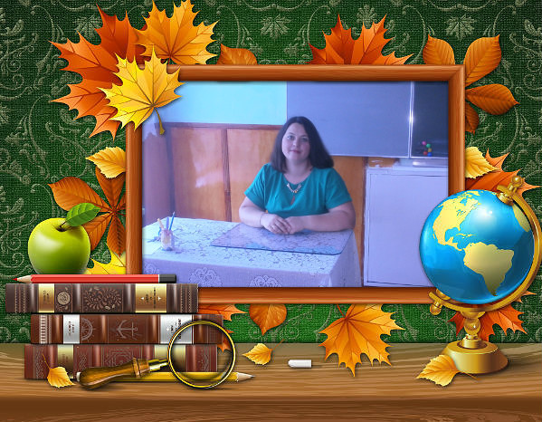
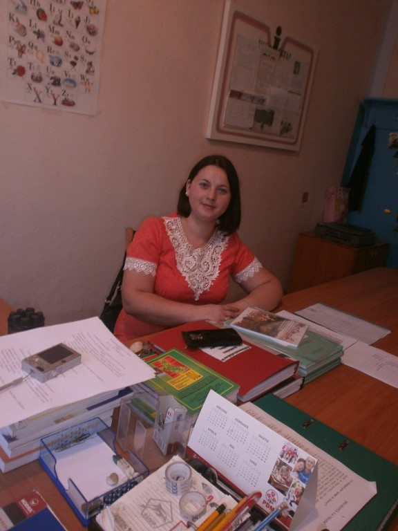
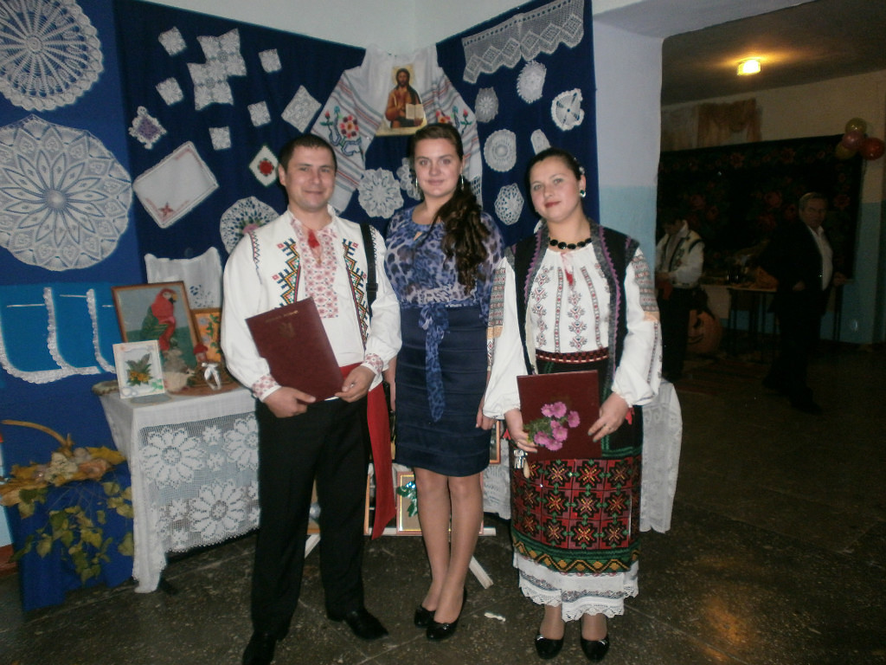
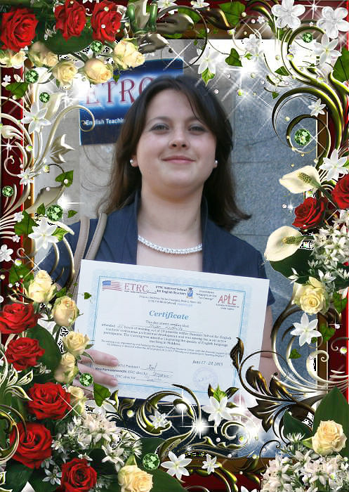

Trifan Ludmila
|
Profesor
Româna, Engleza, Rusă liuda.trifan@gmail.com +37367*****20 R.Moldova, or. Călărași |
Mă numesc Trifan Ludmila. Sunt din Republica Moldova. Sunt profesoară de limba şi literatura română și limba engleză în LT "Mihai Sadoveanu" din or. Călărași de șaptesprezece ani predau limba engleză și limba și literatura română în clasele primare, gimnaziale și liceale. Sunt o fire creativă și responsabilă. Tot ceea ce fac, fac cu dăruire și iubire. |
|  |  |  |  |
Experiența de lucru
Profesor de limba și literatura română. Limba engleză.
August 2007- PrezentActivez în calitate de profesor la Școala Profesională, or.Călărași
Profesor de limba engleză.
Septembrie 2022- PrezentActivez în Liceul Teoretic „Mihail Sadoveanu” din or.Călărași
Profesor de limba engleză.
Septembrie 2021- Mai 2022Am activat în calitate de profesor de limba engleză, prin cumul, în Școala Primară, or Călărași.
Profesor de limba engleză.
Septembrie 2006- Mai 2007Am activat în calitate de profesor de limba engleză la Colegiul Pedagogic, or Călărași.
Educația
Universitatea de Stat din Tiraspol, or. Chișinău
2003-2007Facultatea -filologie, Specialitatea - Limba și literatura română şi limba engleză;
Colegiu Pedagogic „Alexandru cel Bun”, or. Călărași
2000-2003Am studiat ciclul liceal.
Gimnaziul din sat. Cotiujenii Mari, r. Șoldănești.
1991-2000Am studiat ciclul gimnazial.